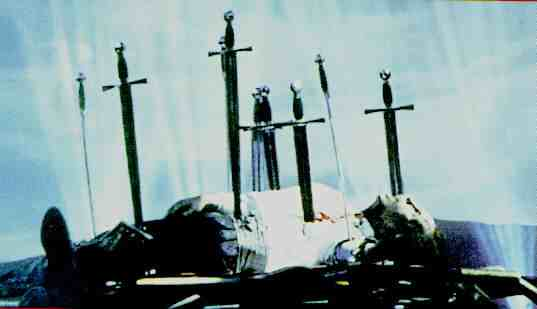

LORD OF ILLUSIONS B, A-US/1995/COLOR/WIDESCREEN 1.85:1/STEREO SURROUND,AC-3/121 MINUTES/DIRECTED BY CLIVE BARKER/STARRING SCOTT BAKULA, KEVIN J. O'CONNOR/MGM/ SUPPLEMNTALS/53 CHAPS/2 DISCS/CLV/$44.98 You have to admire what Clive Barker's effort in making Lord of Illusions. It's not just your run of the mill blood feast. Don't worry horror fans, it's got more than its share of horrific imagery. Barker, who also wrote the screenplay based on his own works, combines a reasonable helping of horror with noir, certainly enhancing the horror movie that's here and having lots of fun with the conventions of both genres while he's at it. Lord of Illusions is a very enjoyable film to watch.  In 1982 a wild confrontation takes place within the walls of a commune in the Mojave Desert. Nix, a mad master of magic and cult leader, has kidnapped a girl and his most talented disciple leads a group of disgruntled cult members into the commune to free the girl. Swann, the disciple, is able to defeat Nix and send him to a gruesome end. Flash forward thirteen years later: Harry D'Amour is a tired New York City private detective hired to check an insurance fraud that takes him to Los Angeles and sucks him right into the midst of the resurrection of the cult of Nix. Swann, now a master illusionist is killed attempting a death defying new illusion. There's more to this illusion than meets the eye. Scott Bakula plays Harry D'Amour with a proper slump to his posture and cool delivery of dialogue. Before he finishes this assignment he will come face to face with the horrors of the occult in a grisly climax that pits the detective and the illusionist against the dark forces of the demented Nix. Kevin J. O'Connor plays Swann with an off center kilter that labels him outsider and Famke Janssen is an appealing Dorothea Swann. Daniel Von Bargen lets it all hang out as Nix. Lord of Illusions delivers all that it promises. The special effects are indeed horrific and the camera work is excellent. Here's a special edition that is not priced to milk the last coins from the sagging pockets of the laser collectors. At $44.98, Lord of Illusions features a running second audio commentary by director Barker that enhances the laser disc production enormously. The extras include a couple of trailers, a making of short that is nicely done. The laser disc production is excellent. The images are very sharp and some of the surround effects are likely to make you leap from your comfortable seat. There are many dark scenes and these are transferred with top notch vitality. Don't dismiss The Lord of Illusions as simply another horror movie. It finds a way to slip out of the handcuffs that bind many other genre films. |